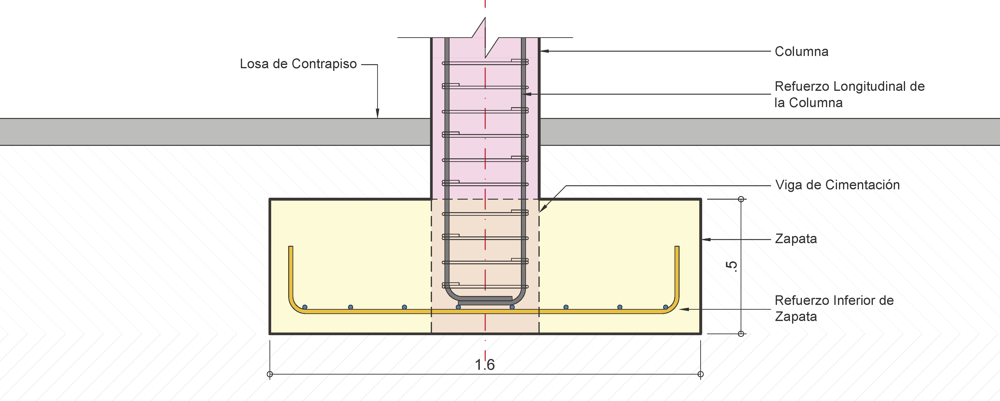
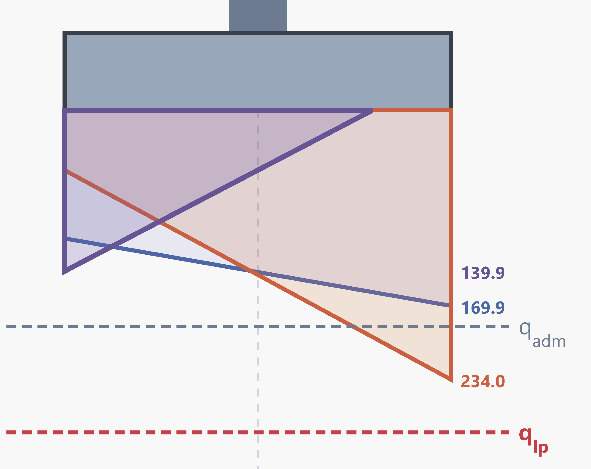
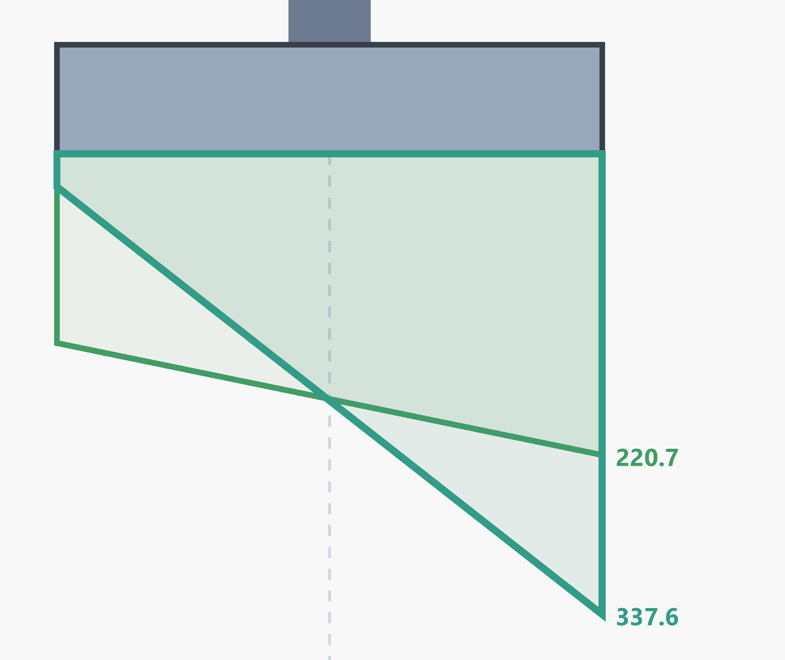
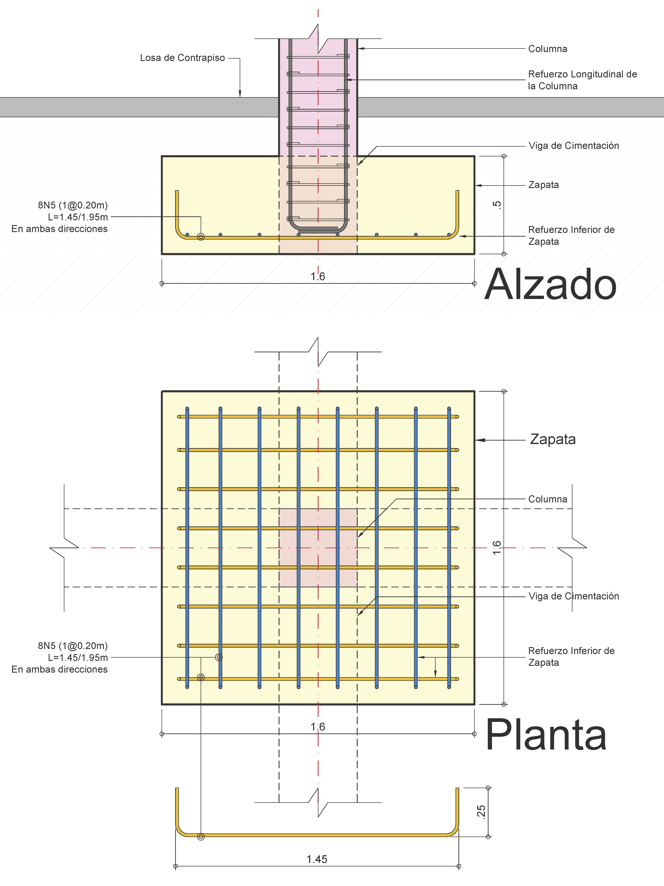

Aprender haciendo. Comprender antes de detallar.
Diseño de Zapata Aislada
Mapa Mental — Comportamiento de la Zapata
El objetivo no es memorizar ecuaciones, sino comprender el flujo de cargas y la interacción suelo-estructura.
- Carga axial \( P \)
- Momento \( M \): no es opcional; si el apoyo del modelo es empotrado o hay excentricidad, la zapata debe equilibrarlo
- Dimensiones \( B \times L \), espesor \( H \)
- Rigidez: reparte las cargas al suelo
- Solo empuja (compresión), nunca "jala"
- No resiste tracción: si la resultante sale del núcleo central, parte de la base se despega y la presión se redistribuye
Presión uniforme
Trapezoidal, contacto total
Pérdida de contacto, triangular sobre \( L' \)
\( \sum F = 0 \) y \( \sum M = 0 \) en todos los regímenes, con presiones solo de compresión.
- Verificar la excentricidad
- Optimizar \( B \times L \)
- Verificar presiones, cortante y flexión
Si hay momento, SIEMPRE se verifica la excentricidad en la dirección en que actúa:
- \( M_y \) (presión varía a lo largo de \( L \)): \( e_L = M_y/P \leq L/6 \)
- \( M_x \) (presión varía a lo largo de \( B \)): \( e_B = M_x/P \leq B/6 \)
- Momentos en ambos ejes: \( \dfrac{e_L}{L} + \dfrac{e_B}{B} \leq \dfrac{1}{6} \)
- Se cumple → toda la base en compresión (distribución lineal).
- No se cumple → hay pérdida de contacto: el suelo no resiste tracción y la presión debe redistribuirse sobre un área efectiva, de modo que se mantengan \( \sum F = 0 \) y \( \sum M = 0 \) (Anexo B).
Convención de ejes (en planta): \( x \) es paralelo a \( L \) y \( y \) es paralelo a \( B \). \( M_y \) es el momento alrededor del eje \( y \) (flecha de momento paralela a \( y \)) y hace variar la presión a lo largo de \( x \), es decir, de \( L \). \( M_x \) es el momento alrededor del eje \( x \) y hace variar la presión a lo largo de \( y \), es decir, de \( B \).
Aprender a transformar \( P \) y \( M \) en presiones compatibles con el comportamiento real del suelo y diseñar el concreto para resistirlas.
Nota: Reconocemos que nuestros diagramas (uniformes, trapezoidales, triangulares) son idealizaciones matemáticas compatibles con el equilibrio estático.
Índice de Contenido
1. Geometría Preliminar y Control de Anclaje
Definición del elemento y verificación de viabilidad constructiva (NSR-10 C.12 y C.15)

Figura 1: Interfaz Columna-Zapata. El espesor \( H \) debe alojar el anclaje del refuerzo vertical.
Sección: \( 400 \times 400 \text{ mm} \)
Refuerzo: 8 Varillas N°5
\( q_{adm} = 200 \text{ kN/m}^2 \) (Servicio - Valor de referencia)
\( q_{lp} = 292 \text{ kN/m}^2 \) (Dato específico para el ejemplo*)
Profundidad de desplante: \( 0.50 \text{ m} \)
*Nota: \( q_{adm} \) es el valor base. El uso de un límite mayor (\( q_{lp} \)) para eventos extremos (ej. sismo) se incluye en este ejemplo para enriquecer el proceso de diseño, en la práctica depende del estudio geotécnico.
Antes de dimensionar por cortante, debemos verificar el anclaje a tensión y a compresión de las barras longitudinales de la columna en el interior de la zapata. Para este caso, tenemos barras N°5 (\( d_b = 15.9 \text{ mm} \)), \( f_y = 420 \text{ MPa} \) y \( f'_c = 21 \text{ MPa} \) (concreto de peso normal).
Dado que la columna transfiere momento, algunas barras estarán traccionadas e intentarán "arrancarse" de la zapata (NSR-10 C.15.8.2.2). Se evalúa tanto el anclaje a compresión recta como el de tracción (asumiendo un remate con gancho a 90° en el fondo):
El mayor valor entre:
- \( \frac{0.24 f_y}{\sqrt{f'_c}} d_b = \frac{0.24 \cdot 420}{\sqrt{21}} 15.9 = \mathbf{350 \text{ mm}} \)
- \( (0.043 f_y) d_b = (0.043 \cdot 420) 15.9 = 287 \text{ mm} \)
Para gancho estándar a 90°:
- \( l_{dh} = \frac{0.24 f_y}{\sqrt{f'_c}} d_b = \frac{0.24 \cdot 420}{\sqrt{21}} 15.9 = \mathbf{350 \text{ mm}} \)
- (Asumiendo factores de modificación de recubrimiento y confinamiento = 1.0)
Por lo tanto, ambas condiciones exigen alojar una longitud recta de 350 mm dentro del concreto masivo de la zapata.
Asumiendo un espesor preliminar \( H = 500 \text{ mm} \) y que el gancho de la columna termina apoyado sobre la parrilla inferior de la zapata (armada con barras N°5 en ambas direcciones), calculamos la longitud disponible real:
- Espesor de la zapata (\( H \)): 500 mm
- Recubrimiento inferior libre: 75 mm
- Dos capas de acero de la zapata (N°5): \( 2 \times 15.9 = 31.8 \text{ mm} \)
- Longitud disponible real: \( 500 - 75 - 31.8 = \mathbf{393 \text{ mm}} \)
✅ \( 393 \text{ mm} > 350 \text{ mm} \). El espesor \( H = 500 \text{ mm} \) es adecuado para el anclaje a tracción y a compresión.
2. Reacciones del Modelo Estructural
Valores nominales obtenidos del análisis global en la base de la columna (Combinaciones de Servicio)
Las siguientes fuerzas y momentos corresponden a las reacciones sin mayorar que la superestructura transmite a la cimentación:
| Tipo de Carga | Carga Axial \( P \) (kN) | Momento \( M_y \) (kNm) |
|---|---|---|
| Muerta (D) | 290 | 10 |
| Viva (Live) | 70 | 10 |
| Sismo (E) | 45 | 85 |
Concreto (\( f'_c \)): \( 21 \text{ MPa} \)
Acero de refuerzo (\( f_y \)): \( 420 \text{ MPa} \)
Planta (B x L): \( 1.60 \times 1.60 \text{ m} \)
Espesor (\( H \)): \( 0.50 \text{ m} \)
3. Distribución de Presiones y Estabilidad
Verificación en Servicio y Evaluación de Estabilidad para Zapata de \( 1.6 \times 1.6 \text{ m} \)
Enfoque de presiones netas: \( q_{adm} \) y \( q_{lp} \) del estudio son valores brutos. Las cargas de la tabla no incluyen el peso de la zapata, por eso se les resta \( \gamma_c H \) y se comparan presiones netas. Así no hay que recalcular el peso propio cada vez que cambian \( B \), \( L \) o \( H \) durante el diseño.
\( q_{adm,neto} = 200 - (24 \times 0.50) = \mathbf{188 \text{ kPa}} \)
\( q_{lp,neto} = 292 - (24 \times 0.50) = \mathbf{280 \text{ kPa}} \)
Dato asumido para este ejemplo; no es una capacidad normativa, sino una aproximación del estado límite del suelo (plastificación).
Atención: no existe un incremento universal automático para sismo. Si se excede \( q_{adm} \), aceptar una presión mayor (ej. \( q_{lp} \)) requiere el aval del geotecnista sobre capacidad portante, asentamientos y estabilidad. En este ejemplo \( q_{adm} \) controla en servicio y \( q_{lp} \) solo se usa para evaluar combinaciones extremas.
*Nota: en este ejemplo particular se asumió \( M_x \approx 0 \) por simplicidad pedagógica, con el fin de aislar el comportamiento y explicar más fácilmente los conceptos en una dirección dominante. Con momentos en ambos ejes (ej. sismo ortogonal) el problema es bidimensional y la presión máxima se desplaza a una esquina: \( q = \frac{P}{A}\left(1 \pm \frac{6e_L}{L} \pm \frac{6e_B}{B}\right) \), válida mientras no haya pérdida de contacto.
| Combinación | \( P \) (kN) | \( M_y \) (kNm) | Excentricidad \( e \) (m) | Régimen Base | Presión \( q_{max} \) (kPa) |
|---|---|---|---|---|---|
| Serv1: D + Live | 360 | 20 | 0.06 | Elástico (Contacto Total) | 169.9 < \( q_{adm} \) |
| Serv2: D + 0.75Live + 0.525E | 366 | 62 | 0.17 | Elástico (Contacto Total, límite plástico) | 234.0 < \( q_{lp,neto} \) |
| Serv3: 0.6D − 0.7E | 142 | 53.5 | 0.38 | Despegue | 139.9 (Efectiva) |
Alcance de las combinaciones de carga: Las combinaciones presentadas corresponden a los casos seleccionados para ilustrar las verificaciones de servicio del ejemplo. Otras combinaciones no incluídas acá, cuando resulten aplicables, deben considerarse en los controles de estabilidad y contacto con el suelo en un diseño completo. Una combinación que no gobierne una revisión particular puede seguir siendo relevante para otro estado límite.

Figura 2: Envolvente de presiones de servicio comparadas con los límites \(q_{adm}\) y \(q_{lp}\) [kPa].
\( L/6 = \mathbf{0.267 \text{ m}} \)
• Si \( e > 0.267 \) → Pérdida de contacto (Distribución Triangular en Comb. Serv3: \( L' = 1.27 \text{ m} \)).
Los momentos provienen de idealizar la base de la columna como un empotramiento en el software de análisis. Nótese que en la combinación Serv3: (\(0.6D-0.7E\)), la fuerza gravitacional baja tanto frente al sismo, que la excentricidad se dispara (\( e = 0.38 \)), forzando el despegue de la zapata.
El suelo no resiste tracciones en el modelo convencional de contacto suelo–zapata. Si el análisis lineal predice presiones negativas, estas indican pérdida de contacto, no una tracción que el terreno pueda resistir. El ingeniero debe determinar una distribución de presiones compatible con el equilibrio estático, limitada a la zona de contacto efectivo y con presiones de compresión o nulas.
La zapata de \(1.6 \times 1.6\ \text{m}\) se adopta como solución para este ejemplo, evaluando las presiones de contacto y la estabilidad bajo las combinaciones de servicio seleccionadas. Su justificación considera tres situaciones:
- a. Estado de Servicio: La presión máxima \(q_{\max}=169.9\ \text{kPa}\) es inferior a la presión admisible neta de \(188\ \text{kPa}\). La dimensión satisface este criterio para la combinación analizada.
- b. Evento Sísmico (Serv2): La presión máxima alcanza \(234\ \text{kPa}\), superando la admisible neta de \(188\ \text{kPa}\). Para este ejemplo, se acepta conforme al criterio geotécnico adoptado, al no superar el límite plástico neto \(q_{lp,neto}\). Esta consideración debe estar respaldada por la evaluación geotécnica correspondiente.
- c. Contacto y Estabilidad ante el Volcamiento (Serv3): En la combinación \(0.6D-0.7E\), la baja carga axial respecto del momento actuante produce pérdida parcial de contacto. Al no admitirse tracciones del suelo, se recalcula la distribución de presiones, obteniéndose un contacto triangular sobre una longitud efectiva de \(1.27\ \text{m}\) y una presión máxima de \(139.9\ \text{kPa}\). La distribución satisface el equilibrio estático y la zapata cumple el criterio de estabilidad por volcamiento adoptado para esta combinación.
Criterio de diseño: optimizar no significa ignorar una combinación desfavorable, sino comprobar que la solución propuesta satisface las condiciones físicas y los criterios de aceptación establecidos.
4. Presiones Mayoradas para Diseño Estructural (ELU)
Cálculo de la reacción última del suelo bajo combinaciones de diseño mayoradas
Calculamos las presiones de contacto últimas (\(q_u\)) requeridas para el diseño estructural del concreto:
| Combinación Última | \( P_u \) (kN) | \( M_u \) (kNm) | \( e \) (m) | \( q_{min} \) (kPa) | \( q_{max} \) (kPa) |
|---|---|---|---|---|---|
| 1.2D + 1.6Live | 460.0 | 28.0 | 0.06 | 138.7 | 220.7 |
| 1.2D + E + Live | 463.0 | 107.0 | 0.23 | 24.1 | 337.6 |
Alcance de las combinaciones de carga: Las combinaciones presentadas corresponden a los casos seleccionados para ilustrar las verificaciones de resistencia del ejemplo. Las combinaciones con menor carga gravitacional, como \( 0.9D \pm E \) cuando resulten aplicables, también deben considerarse en un proceso de diseño completo. Una combinación que no gobierne el momento flector o el cortante mayorado puede seguir siendo relevante para otro estado límite.

Figura 3: Diagramas de presiones mayoradas (ELU) empleadas para el diseño estructural [kPa].
5. Verificaciones de Cortante (NSR-10 C.11)
Antes de evaluar el cortante, calculamos la altura útil descontando al espesor total (\( H = 500 \text{ mm} \)) el recubrimiento libre inferior normativo para concreto vaciado contra el suelo (75 mm) y el radio de la barra de refuerzo a tracción (asumiendo preliminarmente barra N°5, \( d_b = 15.9 \text{ mm} \)):
5.1 Cortante Unidireccional (Comportamiento como Viga Ancha)
Sección crítica evaluada a una distancia \( d = 417.1 \text{ mm} \) de la cara de la columna.
La sección crítica se ubica a una distancia \( d \) de la cara de la columna (NSR-10 C.11.1.3.1). El cortante es la fuerza total generada por la presión del suelo (\( q_u \)) que empuja hacia arriba la longitud libre del voladizo que queda más allá de la sección crítica:
Para una franja unitaria (\( b = 1 \text{ m} \)), \( V_u \) se calcula como el área del trapecio del diagrama de presiones mayoradas en esa longitud libre. Por tanto, en la tabla siguiente, la demanda se expresa por metro de ancho (\( \text{kN/m} \)).
Resistencia nominal al cortante del concreto no preesforzado (NSR-10 C.11.2.1.1). Se calcula para una franja unitaria de ancho \( b_w = 1000 \text{ mm} \):
Con \( \phi = 0.75 \) (NSR-10 C.9.3.2.3), \( \lambda = 1.0 \) (concreto peso normal), y \( f'_c = 21 \text{ MPa} \):
| Combinación | Presión \( q(d) \) [kPa] | Demanda \( V_u \) [kN/m] | Capacidad \( \phi V_c \) [kN/m] | Estado |
|---|---|---|---|---|
| 1.2D + 1.6Live | 211.3 | 39.5 | 243.7 | ✅ OK |
| 1.2D + E + Live | 301.8 | 58.5 | 243.7 | ✅ OK |
5.2 Cortante Bidireccional (Punzonamiento): Verificación Básica
Equilibrio de fuerzas verticales en el perímetro crítico (NSR-10 C.11.11).
La columna transmite una carga concentrada a la zapata, que a su vez la distribuye hacia el suelo. Alrededor de la columna se define un perímetro crítico a una distancia (\(d/2\)) de sus caras. Para nuestra columna cuadrada (\(400 \times 400 \text{ mm}\)), la longitud total de este perímetro (\(b_o\)) es:
El punzonamiento verifica la capacidad del concreto frente a la fuerza cortante que debe transmitirse a través de esta superficie para evitar que la columna "perfore" la zapata.
En este nivel básico, estudiamos el equilibrio vertical y la resistencia promedio de la sección crítica. La distribución local de esfuerzos asociada a la transferencia de momento se evalúa por separado en el nivel avanzado.
Realizamos un equilibrio de fuerzas. La carga puntual de la columna (\( P_u \)) es contrarrestada por la reacción del suelo que empuja dentro del área crítica (\( A_{crit} = 0.668 \text{ m}^2 \)) ubicada a \( d/2 \):
Donde \( q_u \) es la presión última. En este ejemplo, al considerar una distribución lineal de presiones y una configuración centrada, esta presión se evalúa en el centroide de dicha área crítica.
Se rige por el menor de tres valores normativos (NSR-10 C.11.11.2.1) evaluados a lo largo del perímetro crítico \( b_o = 3268 \text{ mm} \):
• Ec. C.11-32: 3683 kN
• Ec. C.11-33: 2061 kN (Gobierna)
| Combinación Última | \( q_{u,eje\_ac} \) [kPa] | Demanda \( V_u \) [kN] | Capacidad \( \phi V_c \) [kN] | Estado |
|---|---|---|---|---|
| 1.2D + 1.6Live | 179.7 | 340.0 | 1546.0 | ✅ OK |
| 1.2D + E + Live | 180.9 | 342.3 | 1546.0 | ✅ OK |
⚠️ Alcance de esta comprobación: Cuando la columna transmite un momento flector, la demanda no se describe únicamente mediante la fuerza cortante resultante. El momento puede generar una distribución no uniforme de esfuerzos a lo largo del perímetro crítico. Por ello, la verificación se complementa en el apartado siguiente con la evaluación de los esfuerzos locales asociados a la transferencia de momento.
5.3 Cortante Bidireccional (Punzonamiento): Verificación Avanzada
Verificación local de esfuerzos incluyendo transferencia de momento (NSR-10 C.11.11.7).
- El suelo alivia el cortante: La presión dentro del área en planta del perímetro (\( A_{int} \)) reduce la fuerza neta: \( V_u = P_u - (A_{int} \cdot q_u) \).
- El momento concentra el esfuerzo: Se incrementa localmente el esfuerzo sobre la sección resistente (\( A_v = b_o d \)): \( v_{u,max} = \frac{V_u}{A_v} + \frac{\gamma_v M_u c}{J_c} \).
- Criterio conservador: Se adopta \( \gamma_v = 1.0 \) asumiendo que el 100% del momento se transfiere por excentricidad del cortante.
Nota: El momento de la reacción del suelo sobre el área encerrada por el perímetro crítico se anula por simetría para la configuración centrada y la distribución lineal de contacto completo consideradas. Si existe despegue, debe revisarse el equilibrio de la zona en contacto efectivo, pues esa simplificación ya no puede asumirse automáticamente.
*Parámetros: \( A_v = 1.363 \text{ m}^2 \). Capacidad \( \phi v_c = 1.134 \text{ MPa} \). (Ver cálculo de \( J_c \) y discusión sobre \( \gamma_v \) en el Anexo D).
| Combinación Última | Esfuerzo Medio \( V_u / A_v \) |
Esfuerzo Máximo \( v_{u,max} \) (\( \gamma_v = 1.0 \)) |
Capacidad \( \phi v_c \) |
Estado |
|---|---|---|---|---|
| 1.2D + 1.6Live | 0.249 MPa | 0.320 MPa | 1.134 MPa | ✅ OK |
| 1.2D + E + Live | 0.251 MPa | 0.521 MPa | 1.134 MPa | ✅ OK |
6. Diseño de Refuerzo por Flexión
Cálculo de acero y verificación de cuantías mínimas (NSR-10 C.15.4)
El momento último de diseño de la zapata, \( M_u \), depende integralmente de la distribución del prisma de presiones del suelo. Para este ejemplo se idealiza la respuesta de la zapata considerando una dirección dominante de flexión, \( M_x \approx 0 \), con el propósito de explicar el procedimiento de diseño. Esta simplificación permite desarrollar el cálculo en una dirección, pero no sustituye la evaluación de los momentos y las presiones de contacto en ambas direcciones cuando las acciones del proyecto lo requieran.
La zapata se idealiza como una viga en voladizo empotrada en la cara de la columna (sección crítica, NSR-10 C.15.4.2). La luz de este voladizo libre se calcula como:
Por estática, el momento último (\( M_{u,y} \)) en una franja unitaria se calcula respecto a la cara de la columna, integrando la presión del suelo (\( q_u \)) sobre el voladizo. Dado que la presión varía linealmente, la carga resultante y su brazo deben obtenerse a partir de la geometría de ese diagrama; no siempre se puede usar directamente una expresión simplificada de carga uniforme.
El acero se determina garantizando que la resistencia nominal ponderada (\( \phi M_n \)) iguale o supere la demanda (\( M_{u,y} \)). Verificando que se trata de una sección controlada por tracción (\( \phi = 0.90 \)):
De aquí se despeja el acero requerido por cálculo (\( A_{s,req} \)). Para el diseño, gobernará el mayor valor entre este \( A_{s,req} \) y el acero mínimo normativo exigido para elementos sometidos a flexión.
Flexión longitudinal. Resultados del análisis estático para una franja de diseño unitaria de \( 1.0 \text{ m} \):
- Comb. 1.2D+1.6Live: \( q_{cara} = 189.9 \text{ kPa} \) \(\rightarrow\) \( M_{u,y} = 37.9 \text{ kNm/m} \)
- Comb. 1.2D+E+Live: \( q_{cara} = 220.0 \text{ kPa} \) \(\rightarrow\) \( M_{u,y} = 53.7 \text{ kNm/m} \) (Crítico)
Gobierna el refuerzo mínimo a flexión
Aunque en este ejemplo los momentos que transmite la columna alrededor del eje X son nulos, (\(M_{u,x} = 0\)), el voladizo transversal de la zapata debe resistir la reacción ascendente del terreno. Dado que existe un gradiente de presiones a lo largo de la dirección X (\(q_u(x) = mx + b\)), se adopta la presión máxima absoluta (\(q_{u,\max}\)) de la distribución factorizada para diseñar un refuerzo transversal uniforme en toda la cimentación, garantizando un diseño seguro y constructivamente simple.
- 1. Presión de diseño transversal: Se adopta \(q_{u,\max} = 337.6 \text{ kPa}\) (proveniente de la combinación sísmica \(1.2D + E + Live\)).
-
2. Voladizo transversal (\(a_y\)):
\( a_y = \frac{B - c_y}{2} = \frac{1.60 - 0.40}{2} = \mathbf{0.60 \text{ m}} \)
-
3. Flexión Transversal Unitaria (\(M_{u,x}\)):
\( M_{u,x} = \frac{q_{u,\max} \cdot a_y^2}{2} = \frac{337.6 \cdot 0.60^2}{2} = \mathbf{60.8 \text{ kNm/m}} \)\( A_{s,req} = \mathbf{406 \text{ mm}^2/m} \); \( d_{capa,y} = 401.2 \text{ mm} \); controla \( A_{s,min} = \mathbf{900 \text{ mm}^2/m} \); \( \phi M_n= 133 \text{ kNm/m} \)
Dado que la cuantía mínima rige en ambos sentidos, se unifica el refuerzo para facilitar el armado en obra y evitar confusiones en la colocación:
- Separación calculada: \( S = (199 \text{ mm}^2 / 900 \text{ mm}^2) \times 1000 = 221 \text{ mm} \).
- Disposición Final: Se adoptan 1N5 c/200 mm (8 barras por sentido).
Corte y Planta de Refuerzo

Figura 4: Disposición de la parrilla inferior (8N5 @ 0.20m en ambas direcciones) y proyección geométrica.
- Se opta por la estandarización (recomendado): en este caso, se debe disponer en ambos sentidos el refuerzo máximo obtenido del análisis individual.
- Las solicitaciones y dimensiones son comparables, garantizando la seguridad en el eje más crítico.
- La cuantía mínima rige el diseño en ambas direcciones.
7. Transferencia de Esfuerzos (Aplastamiento)
Resistencia del concreto en la interfaz de apoyo (NSR-10 C.15.8 y C.10.14)
Corresponde a la máxima carga axial mayorada que la columna transmite a la cimentación. Revisando las combinaciones de diseño (Sección 4), extraemos el valor crítico que comprime la interfaz:
Esta es la fuerza que intenta "aplastar" el concreto justo debajo de la huella de la columna.
Resistencia del concreto al aplastamiento (NSR-10 C.10.14). Al apoyarse en una zapata más ancha, el concreto circundante confina el área cargada, incrementando su resistencia:
Donde \( \phi = 0.65 \) (aplastamiento), \( A_1 \) es el área cargada y el factor de confinamiento (\( \sqrt{A_2/A_1} \)) está limitado normativamente a un máximo de 2.0.
- \( A_1 \): Área de apoyo de la columna (\( 0.40 \text{ m} \times 0.40 \text{ m} = 0.16 \text{ m}^2 \)).
- \( A_2 \): Área máxima de la base inferior de la pirámide de difusión (pendientes 1V:2H) contenida completamente dentro de la zapata (\( 1.60 \text{ m} \times 1.60 \text{ m} = 2.56 \text{ m}^2 \)).
\( \sqrt{2.56 / 0.16} = 4.0 \)
Se restringe al límite normativo = 2.0
\( \phi P_n = \mathbf{3712.8 \text{ kN}} \)
\( P_u \) (463.0 kN) < \( \phi P_n \) ✅
Según NSR-10 C.15.8.1, las fuerzas en la base de la columna deben transmitirse a la zapata mediante el aplastamiento del concreto y a través de refuerzo de conexión. Para columnas construidas en obra, la norma exige que el área de este refuerzo en la interfaz no sea menor a \( 0.005 A_g \) (C.15.8.2.1).
De acuerdo con C.15.8.2, este requisito se puede satisfacer mediante el uso de pasadores (dovelas independientes) o extendiendo las barras longitudinales de la columna directamente dentro de la zapata.
8. Anexos y Profundización Académica
Anexo A: Checklist de Detallamiento en Planos
- ✅ Recubrimiento: Garantizar mínimo 75 mm (concreto vaciado contra suelo natural).
- ✅ Confinamiento en Base: Los estribos de la columna deben continuar confinando el refuerzo longitudinal de la columna dentro de la zapata.
- ✅ Anclaje: Las barras longitudinales de la columna deben anclarse a tensión y compresión dentro de la zapata. En la práctica usualmente se llevan hasta la parrilla inferior de refuerzo de la zapata.
- ✅ Nivel de Cimentación: Indicar claramente el Nivel de Desplante o Cimentación (N.F.C.).
- ✅ Vigas de Enlace: Dibujar el despiece completo con sus ganchos de anclaje. Ver NSR-10 A.3.6.4.2.
Anexo B: Modelos de Presión de Contacto
Los diagramas utilizados en el análisis corresponden a idealizaciones basadas en equilibrio estático. Dependiendo de la excentricidad \( e = M/P \), la zapata puede trabajar en diferentes regímenes:
Cuando la presión se acerca a la fluencia local del suelo, la distribución elástica deja de ser representativa y se usan modelos equivalentes. El más sencillo es un bloque rectangular de ancho \( x \) con presión \( q_{lp} \):
¿Y el "incremento del 30 %"? No hay un incremento automático de \( q_{adm} \) para sismo. En este ejemplo, además, la combinación de servicio ya reduce el sismo (\( 0.75 \times 0.7E = 0.525E \)); aplicar un incremento adicional contaría el beneficio dos veces.
La pregunta correcta no es "¿se permite el 30 %?", sino: "Si una combinación sísmica produce una presión superior a la admisible reportada, ¿qué información necesitamos del geotecnista para decidir si la cimentación es aceptable?" (capacidad última con su factor de seguridad, asentamientos totales y diferenciales, y estabilidad).
• Equilibrio estático
• No tracción en el suelo
• Capacidad portante limitada
Anexo C: Verificación de Anclaje a Flexión (NSR-10 C.12)
El acero inferior debe desarrollar su fluencia (\( f_y \)) antes de la sección crítica (cara de la columna). Analizando la barra N°5 seleccionada:
• \( L_d \) (Longitud de desarrollo en tracción recta): ~700 mm
• \( l_{dh} \) (Desarrollo con gancho estándar a 90°): 346 mm
• Voladizo de la zapata: 600 mm
• Longitud útil (descontando recubrimiento): 525 mm
Anexo D: Punzonamiento con Momento — Parámetros y Criterio para \( \gamma_v \)
1. Parámetros de la sección crítica
- Área en planta del perímetro (\( A_{int} \)): \( 0.668 \text{ m}^2 \). Se usa para descontar la reacción del suelo: \( V_u = P_u - A_{int}\, q_u \).
- Área resistente al cortante (\( A_v = b_o d \)): \( 1.363 \text{ m}^2 \) (\( 1{,}363{,}064 \text{ mm}^2 \)).
- Propiedad polar análoga (\( J_c \)): \( 1.616 \times 10^{11} \text{ mm}^4 \), para columna cuadrada centrada con \( d = 417.1 \text{ mm} \).
- Distancia al centroide (\( c \)): \( 408.5 \text{ mm} \).
2. Hipótesis de la verificación
- Zapata interior con columna centrada: el eje del perímetro crítico coincide con el eje de la columna.
- Presión del suelo lineal y sin despegue (en 1.2D + E + Live, \( q_{min} = 24.1 \text{ kPa} > 0 \)).
- Con estas condiciones, el momento de la reacción del suelo sobre el área encerrada por el perímetro se anula por simetría, y el \( M_u \) de la columna es el momento que actúa en el centroide de la sección crítica.
Si hubiera despegue o la columna fuera excéntrica, esta simplificación deja de aplicar y se debe calcular el momento resultante en el centroide del perímetro.
3. El factor \( \gamma_v \) en zapatas
Para conexiones losa-columna, ACI 318-19 (§8.4.2.2 y §8.4.4.2) reparte el momento no balanceado entre flexión y excentricidad del cortante:
Para una columna cuadrada resulta \( \gamma_f = 0.60 \) y \( \gamma_v = 0.40 \). En el material consultado no se identificó una disposición que exija trasladar esta expresión, tal cual, a zapatas aisladas.
| Criterio | \( \gamma_v \) | \( 1.2D + 1.6Live \) | \( 1.2D + E + Live \) | \( \phi v_c \) |
|---|---|---|---|---|
| Analogía con losas | 0.40 | 0.277 MPa | 0.359 MPa | 1.134 MPa |
| Criterio adoptado (conservador) | 1.00 | 0.320 MPa | 0.521 MPa | 1.134 MPa |
4. Qué dice la literatura
- Ungermann, Kalus y Hegger (2023) señalan que el efecto de los momentos no balanceados en zapatas ha sido casi inexplorado, aunque esos momentos también se transfieren por cortante. Ensayaron 4 zapatas con carga centrada y 14 con carga excéntrica, y observaron que el anillo de compresión se desarrolla en menor medida al aumentar la excentricidad. Proponen un método propio y lo comparan con ACI 318-19 y Eurocode 2.
- Lantsoght, Ospina y Alexander (2023) estudian zapatas con carga concéntrica (sin momento). Indican que el espesor de las zapatas suele regirse por las disposiciones de punzonamiento, derivadas principalmente de ensayos losa-columna, y que el comportamiento de las zapatas difiere del de esas conexiones.
Decisión en este ejemplo: dada la escasez de una regla específica para el reparto del momento en zapatas, en Criterio Estructural se adopta \( \gamma_v = 1.0 \), es decir, el momento se transmite íntegramente por excentricidad del cortante. Es un criterio de diseño conservador, no un requisito literal de ACI 318 ni de la NSR-10. El resultado máximo es \( 0.521 / 1.134 = 0.46 \).
Referencias
- Ungermann, J., Kalus, M., & Hegger, J. (2023). Influence of unbalanced moment on punching shear behavior of footings. ACI Symposium Paper SP-357, 240–255. doi:10.14359/51738768
- Lantsoght, E. O. L., Ospina, C. E., & Alexander, S. D. B. (2023). Punching capacity of spread footings using ACI 318-19 and the Strip Model. En A. Genikomsou, T. Hrynyk & E. Lantsoght (Eds.), Punching Shear of Concrete Slabs: Insights from New Materials, Tests, and Analysis Methods (pp. 19–40). American Concrete Institute.
- American Concrete Institute. (2019). Building Code Requirements for Structural Concrete (ACI 318-19), §8.4.2.2 y §8.4.4.2.
Consultas y Discusión Académica
Inicia sesión con tu cuenta de GitHub para dejar una pregunta o comentario técnico sobre este ejemplo.